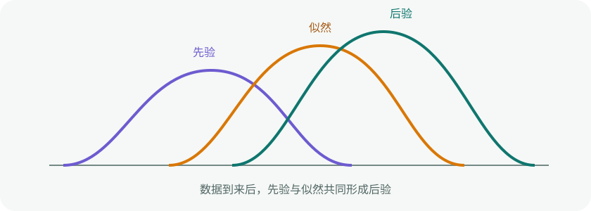

当一项医学检测呈阳性时，结果的意义取决于检测性能，也取决于疾病原本有多常见。贝叶斯统计把先验信息和新数据结合起来，得到更新后的后验分布。

22.1 贝叶斯定理回顾：P(A|B) = P(B|A)P(A)/P(B)
贝叶斯统计的数学基础是一个简洁的概率公式：
P(A|B) = P(B|A) × P(A) / P(B)换到统计学的语境中：
- P(θ) 是先验概率（Prior）：在看到数据之前，我们认为参数 θ 取某个值的概率。
- P(D|θ) 是似然（Likelihood）：如果参数 θ 是真的，我们观测到当前数据 D 的可能性。
- P(θ|D) 是后验概率（Posterior）：看到数据后，我们对参数 θ 的更新信念。
- P(D) 是边际似然（Marginal Likelihood），充当归一化常数。
22.2 先验、似然、后验：贝叶斯更新的三部曲
假设你有一个硬币，想知道它是否公平。贝叶斯方法的做法是：
- 设定先验：在没有抛硬币之前，你认为硬币有 99% 的概率是公平的（p ≈ 0.5）——这是你的先验信念。
- 收集数据：你抛了 100 次，得到 60 次正面。计算似然——如果 p=0.5，看到 60/100 的概率；如果 p=0.6，看到 60/100 的概率。
- 更新后验：结合先验和似然，得到关于 p 的后验分布。后验分布是一个完整的分布，而不是一个单一的点估计——这意味着我们可以说"p 有 95% 的概率落在 0.52 到 0.68 之间"。
频率学派则会说："如果 p 真的等于 0.5，那么看到 60/100 或更极端结果的概率（即 p 值）是 X。如果 X < 0.05，我们拒绝 p=0.5 的假设。"请注意这里的微妙区别：贝叶斯在谈论的是"参数的概率"（p 在某个区间内的概率），而频率学派谈论的是"数据的概率"（在参数为真时看到这些数据的概率）。
22.3 频率学派 vs 贝叶斯学派：两种世界观
| 维度 | 频率学派 | 贝叶斯学派 |
|---|---|---|
| 概率的定义 | 长期频率：重复实验中事件发生的比例 | 信念程度：对某个命题的信任度 |
| 参数 | 固定但未知的常数 | 随机变量，有自己的分布 |
| 输出结果 | 点估计 + 置信区间 + p 值 | 后验分布（完整的概率描述） |
| 先验的使用 | 不使用（或尽量避免） | 明确纳入先验信息 |
| 置信区间的含义 | 重复抽样中 95% 的区间包含真值 | 参数有 95% 的概率落在该区间 |
| 对小样本的适应性 | 差，依赖大样本渐近性质 | 好，可以通过先验注入信息 |
22.4 MCMC：从后验分布中采样
贝叶斯统计面临一个实际问题：后验分布通常没有解析解。也就是说，你没法用纸笔直接写出后验分布的具体公式。这就引出了 MCMC（Markov Chain Monte Carlo，马尔可夫链蒙特卡洛）方法。
MCMC 的思路是：不需要知道后验的精确函数形式，只需要能从中采样就够了。通过构造一条马尔可夫链，让它的平稳分布等于目标后验分布，然后从链中收集样本。有了足够多的样本，我们就可以计算后验均值、分位数、可信区间等一切我们关心的量。
import numpy as np
import matplotlib.pyplot as plt
from scipy import stats
# 简化版贝叶斯更新：抛硬币问题
# 先验：Beta(2, 2) —— 认为硬币大致公平但不确定
# 似然：二项分布 Binomial(n, p)
# 后验：Beta(α + 正面数, β + 反面数)
prior_a, prior_b = 2, 2 # 先验参数
n_trials = 100
heads = 60
tails = n_trials - heads
# 后验参数
post_a = prior_a + heads
post_b = prior_b + tails
# 生成后验分布样本
posterior_samples = np.random.beta(post_a, post_b, 100000)
print(f"后验均值: {posterior_samples.mean():.3f}")
print(f"后验 95% 可信区间: "
f"{np.percentile(posterior_samples, 2.5):.3f} — "
f"{np.percentile(posterior_samples, 97.5):.3f}")
# 可视化：先验 vs 后验
x = np.linspace(0, 1, 1000)
plt.plot(x, stats.beta.pdf(x, prior_a, prior_b),
label='先验 Beta(2,2)', linestyle='--')
plt.plot(x, stats.beta.pdf(x, post_a, post_b),
label='后验 Beta(62,42)')
plt.xlabel('硬币正面概率 p')
plt.ylabel('概率密度')
plt.legend()
plt.title('贝叶斯更新：先验 → 后验')
plt.show()22.5 为什么贝叶斯在 AI 时代翻红
过去几十年，频率学派统计由于计算简便，在学术界占据统治地位。但近年来贝叶斯方法全面复兴，原因包括：
- 计算能力的飞跃：MCMC、变分推理（Variational Inference）等方法的成熟，使得贝叶斯计算不再遥不可及。PyMC、Stan、TensorFlow Probability 等工具让贝叶斯建模变得空前简单。
- 深度学习中的贝叶斯：贝叶斯神经网络（BNN）、贝叶斯优化（Bayesian Optimization）、贝叶斯深度学习方法在不确定性量化方面表现出色，对 AI 安全、主动学习等场景至关重要。
- A/B 测试与产品决策：贝叶斯方法可以自然地引入业务先验，并给出直观的分位数和概率陈述（例如"方案 A 有 87% 的概率优于方案 B"），而频率学派只能给出 p 值。
- 小样本学习和迁移学习：在数据稀缺的场景下，贝叶斯方法的先验机制天然适合迁移已有知识。
这一章我们打开了贝叶斯统计的大门——从贝叶斯定理出发，理解了先验、似然、后验的三部曲，比较了频率学派和贝叶斯学派的世界观差异，了解了 MCMC 如何从后验中采样，并看到了贝叶斯方法在 AI 时代的复兴。下一章我们将回归实践，看看统计学工具链——在实际工作中如何组织数据分析项目、如何选择工具和技术栈。
CORE RELATION
本章核心关系
H 表示假设，D 表示数据；连续参数模型中通常使用概率密度和后验分布表达。
基准率如何影响阳性预测值？
固定灵敏度和特异性均为 99%，调整先验患病率，观察阳性结果后的后验概率。
教学模拟：用于理解概念与方向，不替代真实数据分析、正式功效计算或研究设计审查。
TAKEAWAYS
本章要记住的三件事
- 后验 ∝ 似然 × 先验，归一化常数保证后验概率总和为 1。
- 先验不是随意猜测；它应当被说明、检验并做敏感性分析。
- MCMC 用随机样本近似复杂后验，不等于自动解决模型设定问题。
FURTHER READING
延伸阅读与核对来源
- Bayesian Data AnalysisGelman et al.
- OpenStax · Introductory Statistics 2eOpenStax
参考来源用于核对概念与方法。涉及具体数据、历史细节或行业案例时，应回到原始研究或官方文档逐项核验。